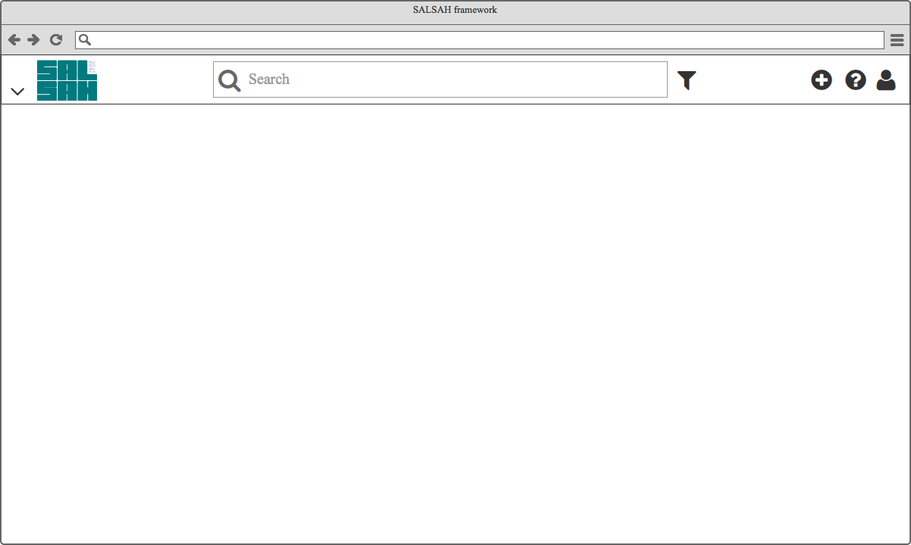

salsahFramework¶
The main SALSAH app component is the framework module which builds the default layout template with
- salsahHeader (Fig. ref{fig:header}) with
- project selection and settings menu
- search bar panel incl. simple and extended search
- import menu (add resources and create collections)
- documentation menu (link to the documentation and/or cheat sheet)
- user menu (profile setting, log out etc.)
salsahFacetedSearch on the left hand side
salsahView as a main container for salsahSearchResults, the graph and resource viewer, dashboard etc. The salsahView would be the frame for the ng2 router-outlet.
salsahFooter (?)

salsahFramework

salsahHeader